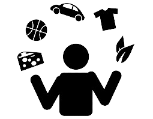

My full name is Syed Abbas Ali, but i go by Abbas. I was born in Scarborugh but moved to Brampton when i was around 2. I've always had a interest in technology and computers, i built my first gaming pc when i was 15 and i coded for the first time when i was 17, i took a 5 year break from programming as i wanted to explore other options. I tried digital marketing and also shortly pursued and education in finance, i ultimately decdied developing was the career i did want to pursue when i was creating websites using templates for some of my digital marketing clients and realized how much fun web development was and wanted to learn the ins and outs of it. i started diving into react and developed my first professional react application for a local barber the site can be found at meencutz.com but might be a bit out of date since the client doesnt cut hair very often anymore so the site hasnt been maintained in a while. from there i wanted to fine tune my fundamental skills since i jumped straight to frameworks and libraries so i took freecodecamps javascript datastructures and algorithms course as well as enrolled in humber college i worked on that course until school started and finished about 85% of it which gave me a good grasp of javascript fundamentals but i want to learn even more.
Biography
Hobbies
My hobbies mostly include, playing PS5 or PC games (Sometimes Xbox) going to the gym, going on long walks with my dog as well as doing leetcode style questions, i find them pretty fun to do because its similar to solving a puzzle and it also helps me develop my skills in prepartion for interviews.
Interests
My main interest is History and religion,i find it fascinating how all these different events and scriptures have shaped our current way of life and how studying history can lead you to somewhat predict the future (in some cases)
Skills
I would say programming is one of my skills, i am fairly decent with terminal commands, as well as react,express,mongoDB and Node. i havent cracked them open in a while but i am sure i can adapt once i get going again (took a 2 month break before school) i also have been lifting weights for 5 years now and have trained a lot of my friends, so i would count that as somewhat of a skill too i guess, i also am able to do video editing in sony vegas pro and adobe after effects because one of my hobbies as a kid was editing call of duty trickshotting montages. and lastly i have some decent SEO, and graphics design skills from my digial marketing days.